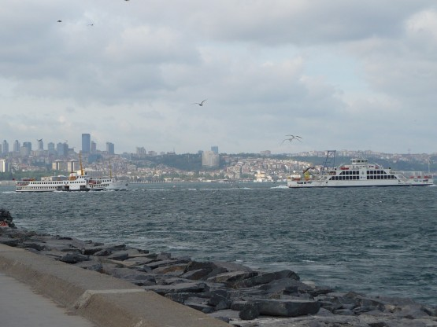
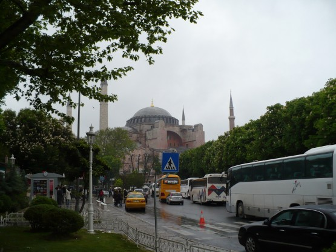
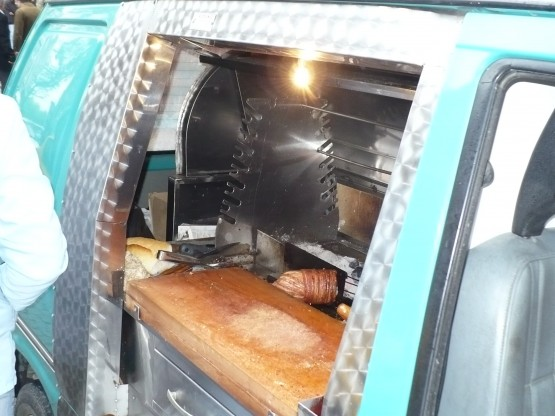
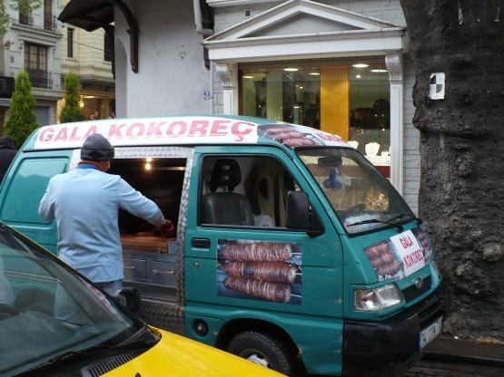
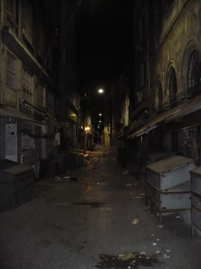
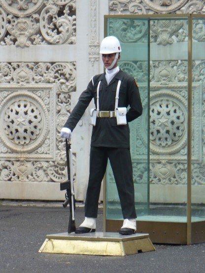
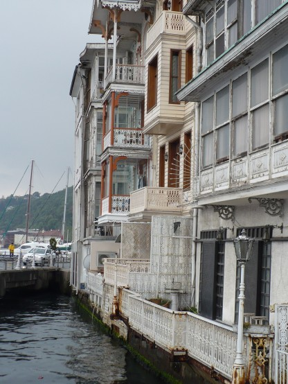
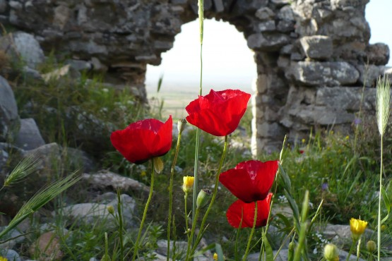

ЗЫ
Друзья, я не вижу смысл, описывать последние 2 дня шатания по Самбулу. Шел дождь, и сам город, после такого насыщенного красотами похода, показался мне скучным. По крайней мере второй день, точно был лишним. Поразительно, но именно в Стамбула наших туристов было действительно много. Вот несколько видов Стамбула.
Набережная

Аль-София

Шаверма на колесах


100 метров в сторону

Красавчег

Венеция?

Как вы уже наверняка поняли, Турция мне ОЧЕНЬ понравилась и запомнилась такой
